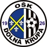

Posledný zápasU9 Prípravka
 ŠK Blava 1928 U9domáci
ŠK Blava 1928 U9domáci TJ Slavoj Bolerázhostia
TJ Slavoj Bolerázhostia
Výsledky prípraviek sa nezapisujú
Návrh webu · nie je to oficiálna stránka klubu
Prípravka U9 ObFZ Trnava
Posledný zápasU9 Prípravka
ŠK Blava 1928 U9domáciTJ Slavoj Bolerázhostia
Výsledky prípraviek sa nezapisujú
Výsledky prípraviek sa nezapisujú, rozpis zápasov je nižšie.

OŠK Dolná Krupá doma, 16. kolo 12:00Hráči, ktorí v kalendárnom roku 2026 nastúpili alebo boli v nominácii na zápas (podľa Sportnetu). Pri mládeži uvádzame len mená.